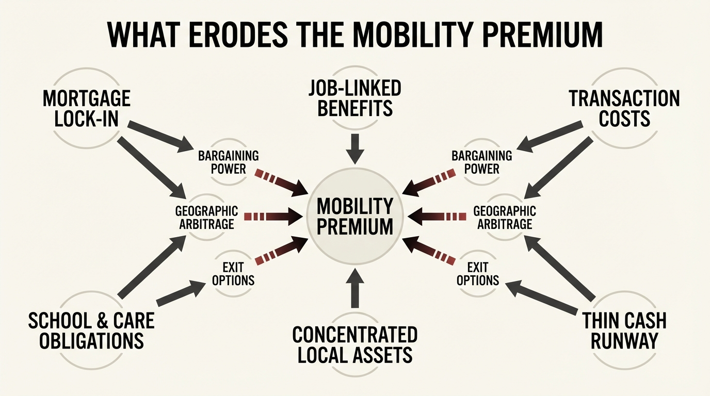

The Mobility Premium
Most people treat mobility as a lifestyle preference. It is better understood as a balance-sheet asset. The household that can relocate, switch jobs, downshift housing, or follow opportunity across regions owns a form of option value that does not appear in net worth but repeatedly changes income, cost base, and bargaining power.
The premium exists because economic life is not static. Jobs reprice, housing regimes diverge, taxes shift, and care obligations change. A fixed household must absorb those changes where it stands. A mobile household can re-route around them. That difference compounds over time even when both households begin with the same visible assets.
Core thesis: the mobility premium is the extra economic resilience created by low-friction movement across work, housing, and geography. It appears in better outside options, faster response to local decline, and access to cheaper or more productive environments. The premium disappears when mortgage structure, benefit design, family logistics, or asset concentration make movement too expensive.

Why Mobility Deserves To Be Treated As Wealth
Wealth is usually presented as ownership. It should also be understood as strategic range. A household with six months of cash, low lease friction, portable skills, and weak location dependence can respond to opportunity very differently from a household with the same net worth locked inside a house, a local labor market, and employer-tied benefits. The second household may look richer on paper. The first is often wealthier in live decision terms.
This is why the mobility premium belongs next to liquidity, housing, and career topics rather than inside lifestyle commentary. It affects wage negotiation, search duration, commute burden, tax exposure, and the ability to arbitrage regional cost differences. Mobility increases the number of acceptable futures a household can reach without balance-sheet damage.
The Premium Shows Up In At Least Three Places
The first is labor-market bargaining power. A worker who can change employer, city, or work arrangement has more credible outside options. Even before a move happens, the option changes negotiations. By contrast, job-lock mechanisms such as nonportable insurance dependence or local family constraints reduce the value of an outside offer because the household cannot convert that offer into action at low cost.
The second is housing flexibility. A mobile renter or lightly anchored owner can react to rate changes, insurance shocks, or local tax drag much faster than a household trapped by mortgage lock-in or expensive transaction costs. The household does not just save money when it moves. It avoids long periods of sitting inside a mispriced housing commitment.
The third is geographic arbitrage. Earnings, taxes, and living costs are uneven across regions. The premium does not require a perfect move from a high-cost city to a cheap one. It only requires that the household can respond when the spread between cost and opportunity changes materially. That spread can come from remote work, a new employer, or a regional recession hitting one city harder than another.
Mobility Has Been Getting Harder
This topic matters more because U.S. residential mobility has been low by historical standards. Lower movement is not proof that mobility has lost value. It is evidence that the premium attached to retaining it may actually be rising. When fewer households can move easily, those that still can have an informational and strategic advantage.
Housing finance adds a second constraint. Mortgage lock-in means that a household with a low fixed rate can face a large monthly penalty for moving, even when the move would improve work options or family logistics. In those cases the house stops being shelter plus equity and starts functioning as a mobility tax. The premium belongs to the household that avoided overcommitting to a structure it cannot leave.

What The Premium Is Not
The mobility premium is not an argument for rootlessness. Constant movement can destroy social capital, child stability, and local advantage. The point is narrower. Households should treat mobility as an asset with a carrying value. Sometimes it is rational to spend that asset by settling into a high-conviction place, school district, business market, or care network. The mistake is to spend it unconsciously and then discover that every future adjustment has become expensive.
It is also not true that all mobility pays. Some moves only substitute one friction set for another. The premium comes from preserving the ability to move when the economics justify it, not from movement as a virtue in itself.
How To Measure Mobility More Honestly
- Calculate relocation cost as a percentage of annual income. Include transaction fees, rent overlap, moving expense, and foregone benefits.
- Score location dependence in the current income stream. A household with remote-compatible earnings owns more geographic option value than one tied to a single local employer cluster.
- Separate owned assets from anchored assets. A house, local business, or concentrated employer equity may build wealth while shrinking exit capacity.
- Run a two-city scenario. Compare after-tax income, housing cost, commute time, and family logistics under a realistic alternative location.
- Track months of decision freedom. Cash runway and lease flexibility determine whether a move can be made strategically rather than under deadline.
These measures often reframe what looks like a housing or career decision. A household may discover that a slightly smaller home, more liquid savings, or lower employer concentration increases real wealth because it restores the ability to respond when a superior market appears.
Known, Inferred, And Unknown
| Category | Assessment |
|---|---|
| Known | U.S. geographic mobility has been low by long-run standards, which means many households are not relocating frequently even when labor and housing conditions diverge. |
| Known | Mortgage and property-tax lock-in can materially reduce household mobility by raising the cost of leaving a current home. |
| Known | Job-lock effects exist when benefits or other institutional frictions make leaving an employer more expensive than wages alone imply. |
| Inferred | Households that preserve mobility retain a hidden premium in bargaining power, geographic arbitrage, and resilience that standard net-worth reporting misses. |
| Unknown | How large the mobility premium is for a given household after family constraints, school preferences, and nonfinancial social capital are priced honestly. |
The Practical Use Of The Idea
The practical lesson is not to optimize for permanent flexibility. It is to know when flexibility is being converted into a fixed bet. If the bet is strong, make it intentionally. If the bet is weak, preserve mobility longer than the surrounding culture suggests. A household rarely regrets owning one more high-quality option set. It often regrets discovering too late that every exit now has a penalty attached.
That is why mobility should be treated as premium, not convenience. It changes the set of available responses when labor markets, housing regimes, or family needs change. In wealth terms, that is not a soft benefit. It is a form of real strategic capital.
Further Reading Inside The Site
This article connects directly to The Mortgage Lock-In Trap, The Career Optionality Gap, and The Rent vs Buy Reversal. Together they show how fixed housing, weak liquidity, and employer dependence quietly consume the premium that flexible households still possess.
Source List
U.S. Census Bureau. Geographic Mobility: 2023. Released December 2024.
Ferreira F, Gyourko J, Tracy J. Housing Busts and Household Mobility: An Update. NBER Working Paper 17405. 2011.
Gruber J, Madrian BC. Limited Insurance Portability and Job Mobility: The Effects of Public Policy on Job-Lock. NBER Working Paper 4479. 1993.
Federal Reserve Bank of Atlanta. Wage Growth Tracker. Accessed April 14, 2026.